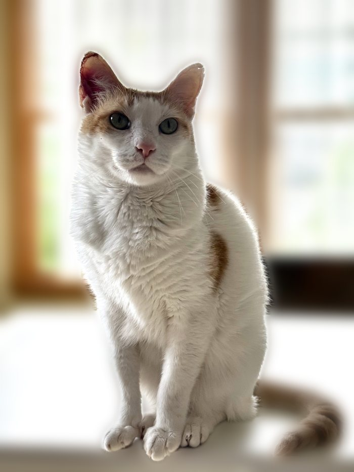
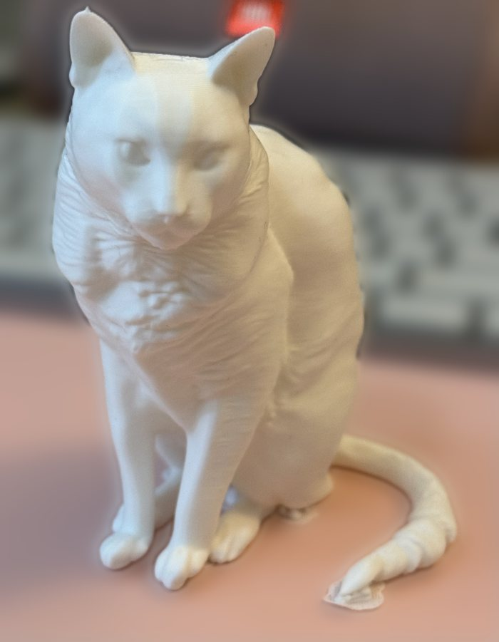
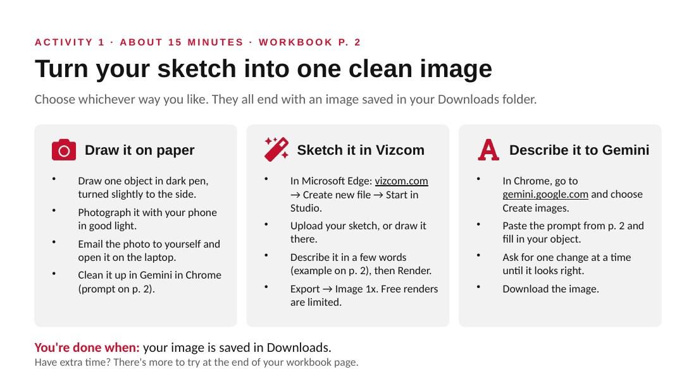
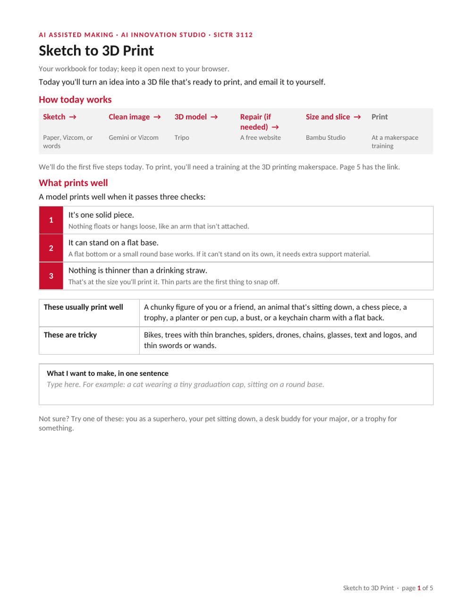
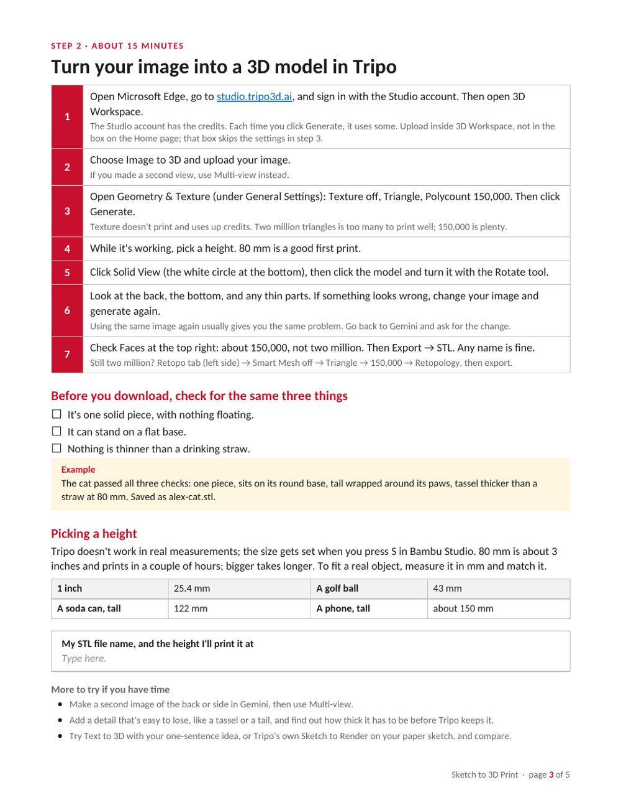
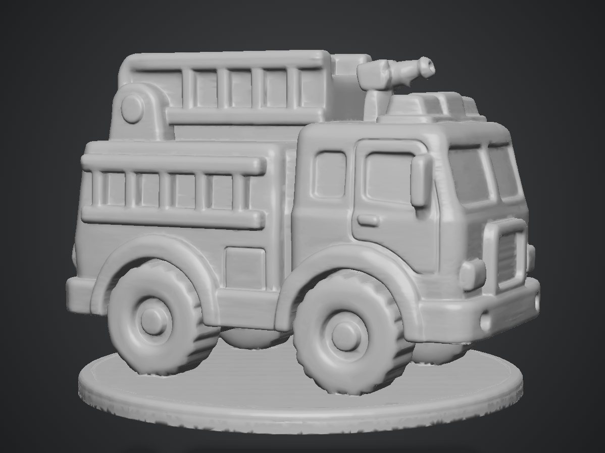
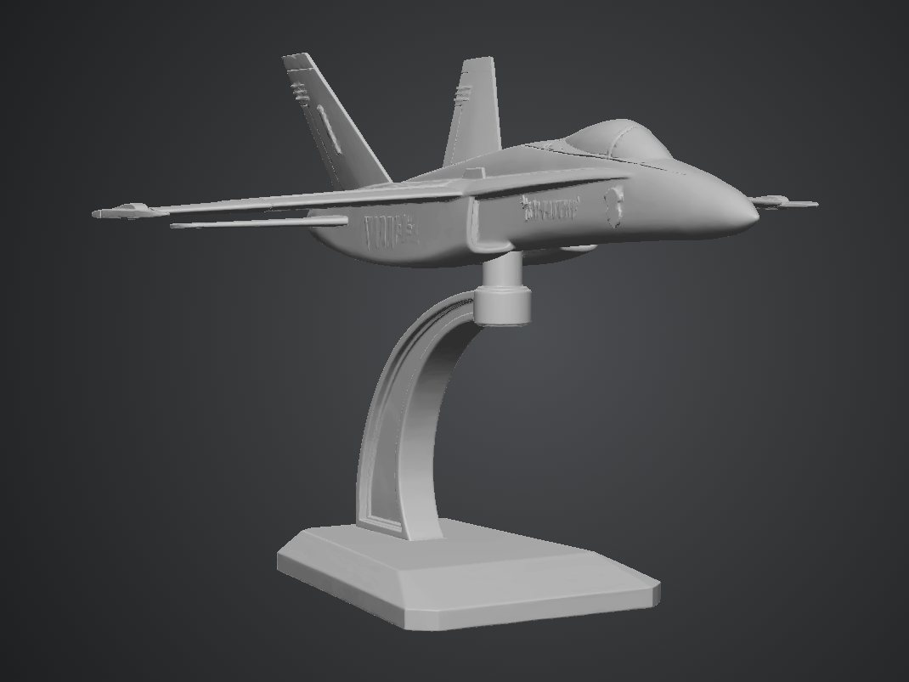
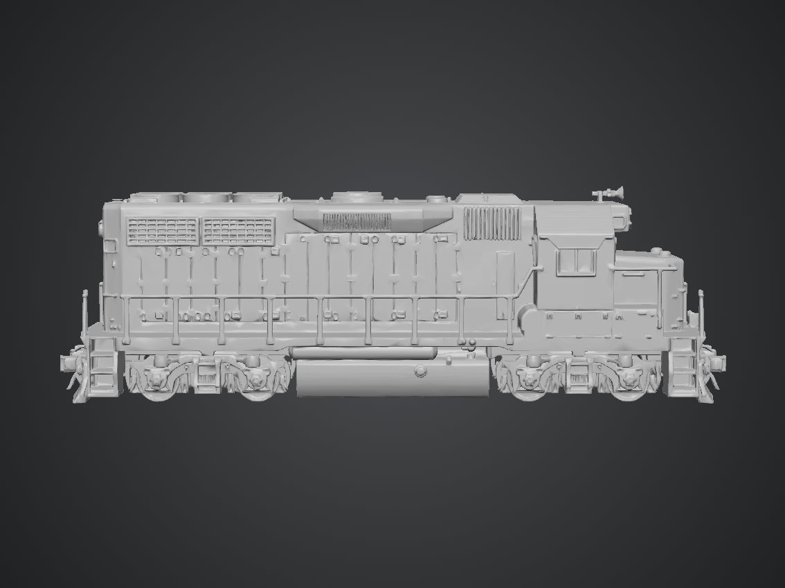
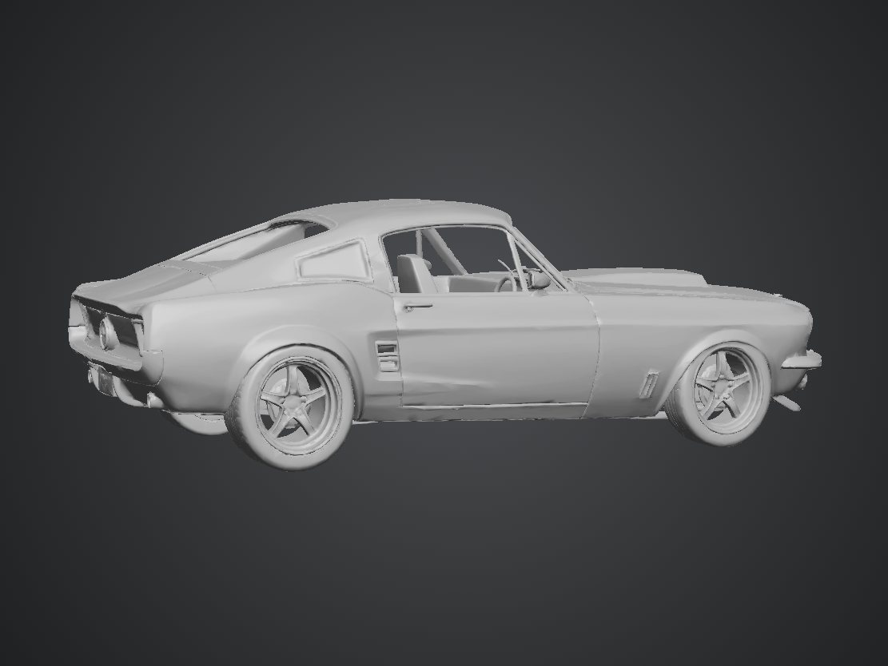
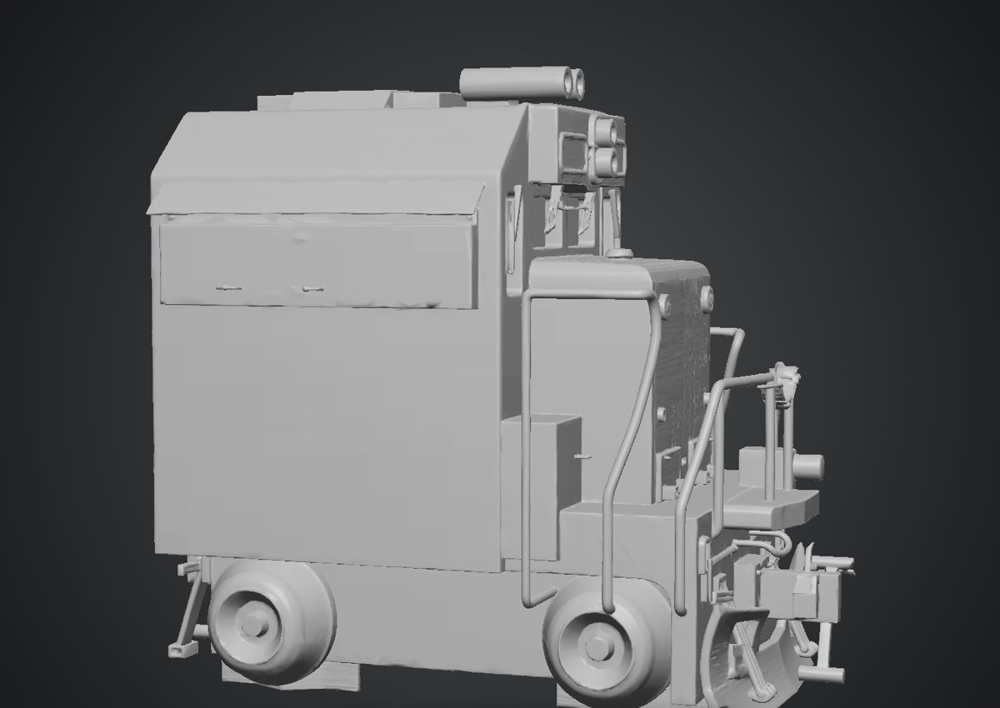

One worked example, start to finish
A photo of a cat runs through every step, from the image prompt to the slicer, and ends as a real print. Participants see how short a good idea can be and where it ends up.
Case study · Workshop design
A hands-on AI workshop where participants turn an idea into a sized, sliced 3D model in one session, ready to print after a makerspace training.
AI tools can turn a picture into a 3D model in minutes, and many of those models won't print. The 3D printing makerspace sees two problems most often with AI-made models: mesh errors, and files with more than a million triangles.
Tripo's default setting produces about two million triangles, a file of roughly 100 MB. Participants arrive with no 3D experience, so the workshop has to prevent these problems without teaching 3D modeling.
Participants complete the first five steps in the session. Printing happens after a training at the 3D printing makerspace.


A photo of a cat runs through every step, from the image prompt to the slicer, and ends as a real print. Participants see how short a good idea can be and where it ends up.
The checks steer ideas at the start and come back as a self-check before export. A drinking straw is a size everyone can picture.
Participants draw on paper, sketch in Vizcom or describe their idea to Gemini. People who don't draw can still take part, and every route ends with the same kind of saved image.
Texture off, triangle topology, 150,000 polygons. That keeps a file near 7 MB instead of about 100 MB, with all the detail an 80 mm print can show.
Every activity ends with a "You're done when" line. Early finishers get "More to try" tasks, so the group moves on together.
A troubleshooting table covers the failures people hit most, such as iPhone .heic photos and repair timeouts. Facilitator notes are detailed enough for someone else to run the session, and a public Canvas site keeps the materials available afterward.
A 22-slide deck with facilitator notes, and a five-page workbook participants keep open beside their browser.



All five models from one session came out between 126,000 and 142,000 triangles, inside the workbook's 150,000 target.





Every model met the triangle target, so the settings step works as written.
The idea stage needs more support. Four of the five models were vehicles with thin parts, such as handrails, wingtips and mirrors, that could break at 80 mm. In the next run, I plan to check each person's one-sentence idea against the three checks before Step 1.